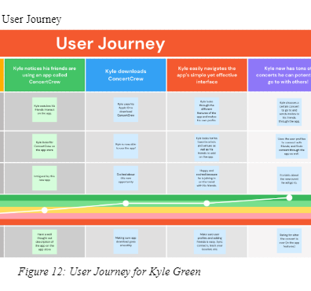

Projects
Click to learn more!
Maternal Health Risk
We used maternal health data, including information such as blood sugar level,
age, systolic blood pressure, and heart rate to classify the level of risk of the pregnancy.
Using three different classification models as well as various data visualization techniques,
we were able to analyze our data and report our findings. We also attempted a Deep Learning,
Dense Layer model to perform three-fold classification and hopefully find accurate results.
For more details, please refer to the project report.
You can access the code on Google Colab.

ConcertCrew App
The ConcertCrew App enables concert goers to find their concert buddies, otherwise known
as their "Concert Crew." Going to concerts alone seems a little daunting, so we wanted to find a way
to connect people who love the same music and want to see it live! We designed and implemented our app
prototype using design principles and user research.
For more details, please refer to the project report.

PushUp Counter
This project involved both hardware and software components. I was able to work on all parts of this Push Up Counter
inclusing the software and code that enabled it to complete tasks such as keeping track of the user's high score and updating it,
and pushing out a protein bar for the winner, as well as the wiring behind the figure and the actual creation of the shape and look of the figure.
This project was very fun and involved a ton of work.
For more details, please refer to the project report.
Recipe Rec Engine
Based on the ingredients and previous things one has cooked, we developed a recommendation engine for potential recipes users would be interested in cooking.
For more details, please refer to the project report.
You can access the project presentation on Google Slides.
Pickasso App
Pickasso App design involved a lot of prior research to learn from apps that already exist and design patterns that already do well.
We created our own app designs so there are three different looks within our project report. This was so fun to work on
and learn about what museum goers look out for during their museum visits.
You can access the project presentation on PowerPoint.

Anime Ratings
Analyzed MyAnimeList user data to discover any correlation between features such as their age, the genre of anime they watch, and the popularity of those animes.
You can access the code on Google Colab.

Food Database
This Boston-based food database project utilized SQL and a Java GUI. Depending on the user's filters, they are able to
select restaurants and view more details about them.
For more details, please refer to the PowerPoint.

Pokémon VS Mozart
We converted snippets of Pokémon theme music and Mozart music to spectrograms to analyze them and see if our neural network models could find a clear distinction between the two.
We ended up getting pretty high accuracy for all of our models.
You can access the project presentation on Google Slides.
You can access the code on Google Colab.